Principais Pontos Turísticos de Irati, Paraná
Parque Aquático
| 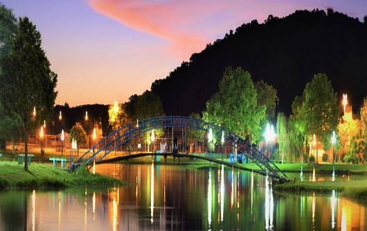 | 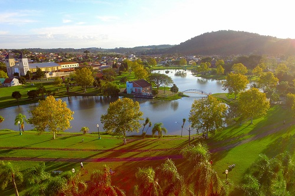 |
| 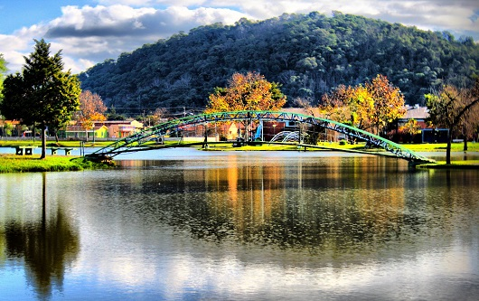 | 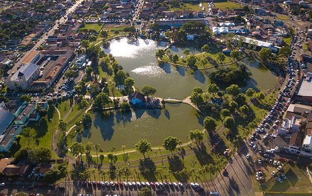 |
Sobre: O Parque Aquático de Irati foi inaugurado em 1989, em uma área aproximada de 79.000m². Tem lago com peixes e patos, Pavilhão de Exposições usado para atividades culturais da cidade, quadras desportivas, pista de cooper/ciclismo, trenzinho, academia ao ar livre e playground para crianças.
Endereço: R. Expedicionário José de Lima, 1232 - 1414, Irati - PR
Vídeo: Canal - Luh Mendes Motochilando
Colina Nossa Senhora das Graças
| 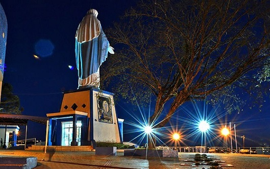 | 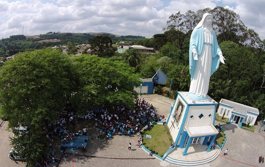 |
| 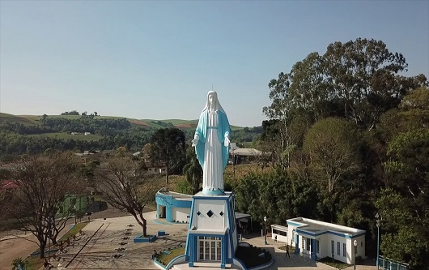 | 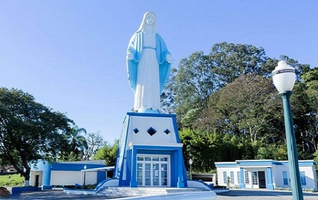 |
Sobre: A imagem de Nossa Senhora das Graças é uma das maiores construída no mundo, com 22 metros de altura. A construção do monumento começou em 1957, em comemoração ao aniversário de 50 anos da cidade. Na capela, em dias festivos e especiais do calendário católico, são celebradas missas e novenas. O local possui estacionamento, capela, loja de souvenir e um mirante com vista da cidade e do pôr do sol.
Endereço: R. João Maria dos Santos - Irati, PR
Vídeo: Canal - Evanir s
Igreja Matrix Nossa Senhora da Luz
| 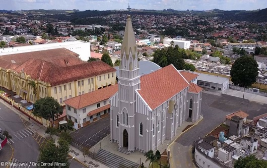 | 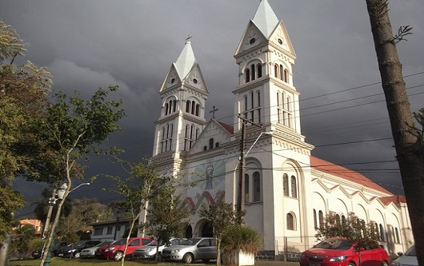 |
| 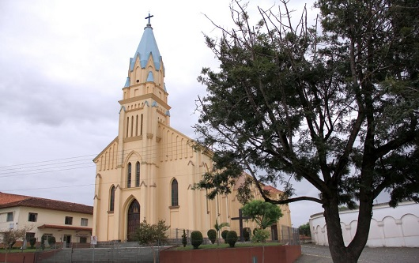 | 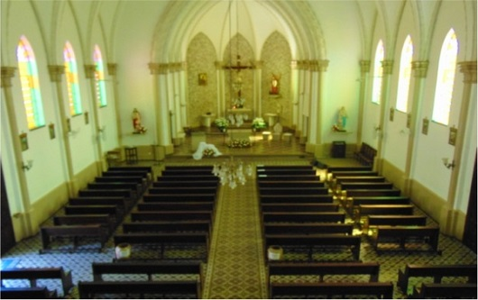 |
Sobre: A devoção a Maria Santíssima com a invocação Nossa Senhora da Luz teve seu início no século XV. Surgiu em meio a uma história singela e singular: ao ser aprisionado pelos mouros, um senhor português, Pedro Martins, muito devoto de Nossa Senhora, invocou com fé a proteção da Mãe de Deus, a qual o libertou.
Endereço: R. Cel. Píres, 994 - Centro, Irati - PR
Vídeo: Canal - Paróquia Nossa Senhora da Luz Irati